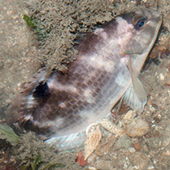
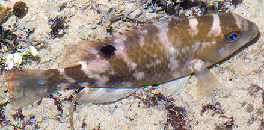
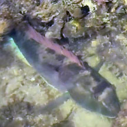

|
|
| fishes text index | photo index |
| Phylum Chordata > Subphylum Vertebrate > fishes > Family Labridae |
| Black-spot
tuskfish Choerodon schoenleinii Family Labridae updated Sep 2020 Where seen? This large fish is sometimes seen near reefy shores. Usually found alone in sandy areas and those with seaweeds. Features: To about 90cm and can weigh 9kgs! Those seen about 20cm long. It has a black spot at the middle of the dorsal fin base. Juveniles have a large white saddle spot after the black spot. Body scales each with a blue centre forming a horizontal row of spots along the side of the body. |
 Beting Bronok, Jun 10 |
 Sentosa, Jul 05 |
| What does it eat? It rests on
the bottom during the day and forages at night, often by overturning
large stones. It is a solitary hunter, eating hard-shelled prey such
as crabs, snails and sea urchins. Human uses: It heavily fished for for the live seafood trade. It is also highly sought after by recreational fishermen throughout its distribution. Status and threats: The Black-spot tuskfish is currently being considered for listing on the IUCN Red List of internationally threatened fishes. |
*Species are difficult to positively identify without closer examination.
On this website, they are grouped by external features for convenience of display.
| Black-spot tuskfishes on Singapore shores |
On wildsingapore
flickr
|
| Other sightings on Singapore shores |
 Pulau Semakau, Sep 23 Photo shared by Che Cheng Neo on facebook. |
Links
|